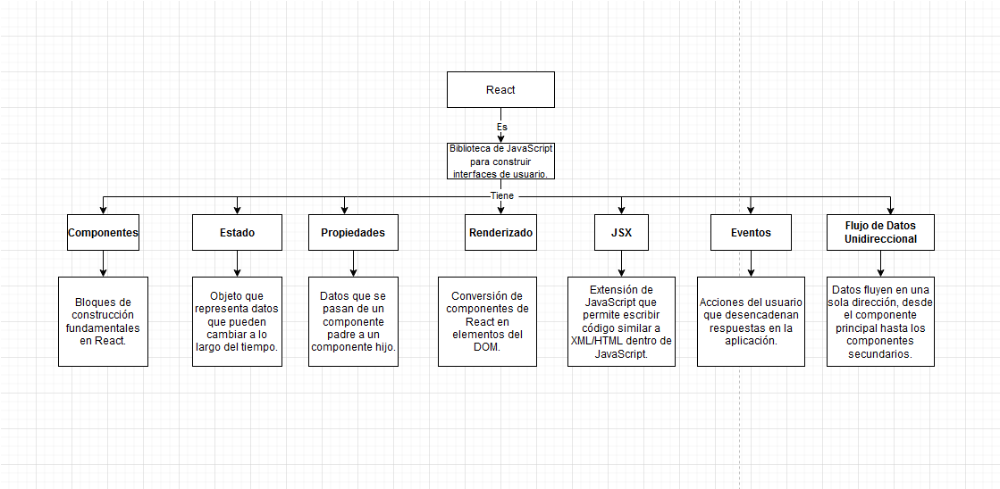

| Caracteristicas | React | JSX |
|---|---|---|
| Definición | Biblioteca de JavaScript para construir interfaces de usuario | Extensión de JavaScript que se utiliza con React para definir la estructura de la interfaz de usuario |
| Sintaxis | Utiliza JavaScript puro y ofrece un enfoque declarativo para construir componentes | Extiende la sintaxis de JavaScript, permitiendo escribir código similar a HTML dentro de JavaScript |
| Renderización | Utiliza el método 'ReactDOM.render()' para renderizar componentes en el DOM | Permite definir elementos de interfaz de usuario de manera más legible, similar al HTML |
| Componentes | Los componentes son creados mediante clases o funciones | Puedes definir componentes usando funciones o clases y luego utilizar JSX para su renderización |
| Variables y expresiones | Puedes utilizar variables y expresiones JavaScript dentro de las etiquetas JSX | Puedes integrar directamente variables y expresiones JavaScript utilizando llaves '{}' dentro de JSX |
| Estilo y clases de CSS | Puedes aplicar estilos mediante el uso de clases y objetos de estilo | Puedes aplicar estilos directamente en línea o mediante el uso de clases de CSS |
| Atributos HTML | Se utilizan camelCase para los atributos (por ejemplo, 'className' en lugar de 'class') | Los atributos siguen la convención de nombres de HTML estándar (por ejemplo, 'class' en lugar de 'className') |
| Renderizado condicional | Puedes usar operadores ternarios o declaraciones 'if' para renderizado condicional | Puedes utilizar declaraciones 'if' directamente dentro de JSX para renderizado condicional |
| Listas y keys | Utiliza el método 'map' para renderizar listas y requiere el uso de 'key' para identificar elementos de manera única | Puedes utilizar 'map' y asignar keys directamente dentro del código JSX para renderizar listas |
| Comentarios | Los comentarios se insertan utilizando la sintaxis de JavaScript '({/* Este es un comentario */})' | Los comentarios se pueden agregar usando la sintaxis de JavaScript ({/* Este es un comentario */}) dentro de las llaves o mediante la sintaxis de HTML '({/* */})' |
| Integración con JavaScript | React permite integrar fácilmente JavaScript en el código | JSX permite integrar JavaScript de manera más sencilla, ya que se mezcla directamente con el código HTML-like |
| Extensión de archivos | Los archivos de componentes generalmente tienen la extensión '.jsx' | Los archivos de componentes generalmente tienen la extensión '.js' cuando se utilizan con React |

En el contexto de React, las "clases" se refieren a las clases de JavaScript que se utilizan para definir componentes. En React, los componentes son las unidades fundamentales de una interfaz de usuario, y se crean mediante el uso de clases de JavaScript. Estas clases de React pueden ser clases de componentes de estado (class Componente extends React.Component) o clases de componentes funcionales (function Componente() {...}). En ambos casos, estas clases encapsulan el comportamiento y la representación de un componente específico. En un componente de clase, puedes definir métodos, estados y ciclos de vida que controlan el comportamiento del componente. Los componentes también pueden tener propiedades que se utilizan para pasar datos de un componente padre a un componente hijo. En resumen, en React, las clases son un concepto clave para la creación y definición de componentes, que son bloques de construcción fundamentales en las aplicaciones React. Estas clases permiten estructurar y organizar la lógica y la presentación de una aplicación de manera más modular. Sin embargo, es importante mencionar que con la introducción de los "Hooks" en React, como useState y useEffect, los componentes funcionales también pueden tener estado y ciclos de vida, eliminando la necesidad de clases en algunos casos.
En React, los principales eventos son eventos del DOM que puedes utilizar para manejar interacciones del usuario. A continuación, se mencionan algunos de los eventos más comunes en React sin proporcionar código específico:
https://drive.google.com/file/d/11Ej8NIDAficKvbCymnXqFp-rjXNGzfhn/view?pli=1
